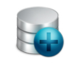

Servicios
Otros Servicios
- Reparación Electrónica
- Asesoramiento
- Reparaciones de PC
- Soporte Telefónico
- Servicio Técnico software
Ventajas
Si sus equipos se encuentran en óptimas condiciones, su negocio irá hacia adelante.
SySTech Soluciones
Estamos para ayudarlo
Hay muchas empresas en el mercado que brindan soluciones de esta indole, pero como lo hacemos nosotros, no hay. Nosotros tenemos el mejor precio, el tiempo más corto de respuesta, un laboratorio equipado con herramientas de ultima tecnología.
Mantenimiento de Equipos
Es muy importante tener sus equipos en óptimas condiciones para su mejor desempeño, laboral u hogareño. Nosotros nos encargamos de que sus equipos siempre esten como el primer día.
Soporte Remoto
Contamos con el mejor soporte remoto del mercado, solucionamos sus problemas de forma on line, a muy bajos costos mensuales.
Respuesta y resolución del problema de forma inmediata, garantizada y segura.
Recuperacion y Resguardo de Información
Los datos e información es lo único de valor que realmente existe en su computadora, nosotros realizamos copia de seguridad de esos archivos o recuperamos la información de discos dañados, con novedosas herramientas.
Servicio Técnico
Hoy en día es muy dificil encontrar un servicio técnico de confianza, nuestos clientes ya nos conocen, nos recomiendan y confian en nosotros. Hace más de 10 años que estamos en el mercado trabajando para día a día superarnos y poder brindar la mejor respuesta el mejor precio.